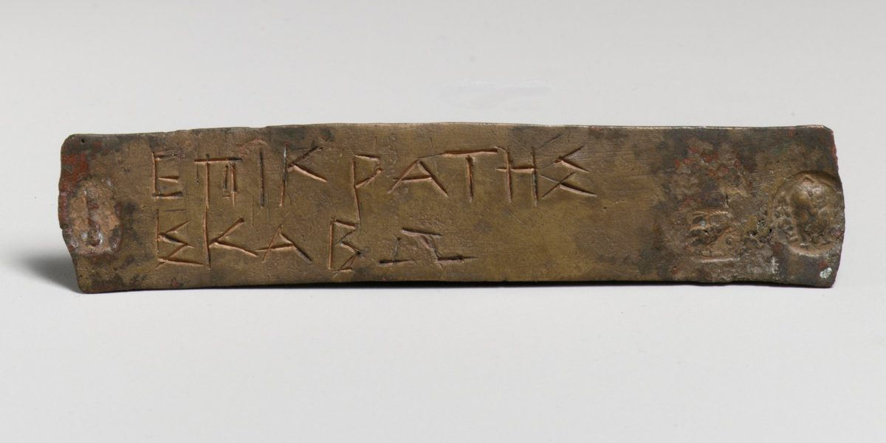

Unit 7 · Women in ancient Greece · Lesson 9
Outside the Assembly
Who could vote, hold office or sit on a jury in Classical Athens, and who could not? Then propose reasons for the exclusion of women from political life, and weigh the evidence for each: a claim, its support and its limit.
Year 11 Ancient History · Present with → or space · Read on a phone with R

Images: The Met (CC0 1.0). Full details on the last slide.
Review · books closed · 6 minutes · press K for the timer
Five questions from Lessons 6–8
- How was Myrrhine chosen, and who could be chosen? She was the first priestess of Athena Nike, “(chosen) by lot from all” in Attic Inscriptions Online’s translation, which reads “all” as all Athenian women: the post was open to Athenian women, not tied to one family.
- How long did Lysimache serve Athena, and why must the inscription be read with care? Sixty-four years, as priestess of Athena Polias. The statue base is partly restored: the editors’ additions, including her name and her age at death, are in square brackets, so the number outside the brackets is the safer evidence.
- How often did Athens give Athena a new peplos, and whose argument is it that girls wove it? Every four years, at the Great Panathenaia. Olga Palagia (2008) argues that girls from leading families wove it. Her evidence for the weavers is later than the Classical period, but she thinks it probably reflects Classical practice.
- What does Phanostrate’s stele call her, and what is uncertain about her status? “Midwife (maia) and doctor (iatros)”. AIO suggests, cautiously, that the man from Melite may have been her father, but “it cannot be entirely ruled out” that she was or had been enslaved.
- Writing · fix the sequence: “Pericles passed a law in 451/0 BCE. Then wives mattered more.” “Because the law, as the Athenaion Politeia reports it, confined citizenship to persons of citizen birth on both sides, a citizen wife’s own birth now counted, which meant that her sons’ status depended on her descent.” A sequence says what came next; a cause says why: because …, which meant that …
Mark your own answers in a different colour. Which question did you find hardest?
Learning intentions and success criteria · 2 minutes
Today’s goals
- analyse the reasons for women’s exclusion from political life in Athens
- propose and weigh explanations
- explain how women were excluded and where they had influence
- propose an explanation, support it and name its limit
- say which reason mattered most, and why
Syllabus outcomes: AH-11-02 proposes ideas about the varying causes and effects of events and developments · AH-11-04 accounts for the different perspectives of individuals and groups in their historical context · AH-11-07 communicates historical understanding, applying historical knowledge, terms and concepts. Life Skills: AH-LS-04 recognises causes and effects of events or developments · AH-LS-11 communicates information about the past using historical terms and concepts.
Feedback in action · 6 minutes · press K for the timer · your answers from the last lesson’s timed questions come back
Rewrite the sentence your feedback names
- 1A provenance phrasewho, when, what kind of source
- 2Precise evidencea short quotation woven into the sentence
- 3Reliable for what?“reliable for … but not for … because …”
- 4Modality matched to the evidenceprobably · suggests · shows
- 5A limitwhat the source cannot show
- Read your strength and your next step.
- Find the sentence your next step points to and underline it.
- Rewrite it underneath, using the feature it names.
- Check: is it a real change in thinking or language, not just a neater copy?
Note-making · the routine for the whole course
How to structure your notes
questions and key terms, written after
short phrases, arrows (→ leads to), abbreviations (c. = about; BCE = Before the Common Era)
- 1A new page for each lessonA cue column about a quarter of the page wide; title and date at the top; room for a summary at the bottom.
- 2Listen and look, then writeDon’t copy while a slide is being explained. Phrases, not sentences; a source for every claim.
- 3Write your own notes at each ✎ checkpointThen compare with the model notes, one row at a time. Add what you missed in a second colour.
- 4Write the cue questions afterwardsUse exam verbs: identify, describe, explain, propose. To revise, cover your notes and answer the cues.
- 5Finish with a three-sentence summaryTwo checkpoints today: who took part · the evidence cards.
Key vocabulary · add to the unit word wall
Words for politics, and for proposing
| Writing terms | Meaning |
|---|---|
| Propose | NESA: ‘Put forward (for example a point of view, idea, argument, suggestion) for consideration or action.’ Department advice: put forward an explanation, support it, and say what it cannot explain. |
| Claim → support → limit | The shape of a ‘propose’ answer: an explanation, its evidence, and what it cannot explain. |
| Content terms | Meaning |
|---|---|
| Metic | A free foreigner living in Athens, without citizen rights (for example Aspasia of Miletus). |
| Ecclesiazusae | Aristophanes’s comedy (about 391 BCE) in which women take over the Assembly in disguise. |
| Added today | Meaning |
| Assembly | The meeting of citizens at which Athens’s proposals were debated and voted on. |
| Dikastes | A juror in an Athenian law court: the Greek word historians use. |
1 · Who took part · I do — who could take part in politics, and who could not?
Who could attend the Assembly, serve on a jury or hold office?
Athenian democracy was, truly, a men’s club where the right to attend the assembly, the law-courts, and the council was restricted to adult males whose fathers were Athenian citizens and whose mothers were legitimate daughters of citizens.
“The Position of Attic Women in Democratic Athens”, Greece & Rome 61.2 (2014), section 2
Those foreigners permanently resident in Attica - those with the legal status of ‘metic’ - were, unlike slaves, free, but, unlike citizens, they could not own land, vote in the Assembly, or serve as a dikastes or as a magistrate; …
“The Origin of Metic Status at Athens”, The Cambridge Classical Journal 56 (2010), p. 259
Who could take part in politics, and who could not? Use both sources. Think first.
| Group | Could they? | Evidence |
|---|---|---|
| Adult male citizens | Yes: attend the Assembly, the law-courts and the council | Pritchard: “restricted to adult males” with a citizen father and a mother who was a citizen’s legitimate daughter |
| Metics | No: on the usual view, no vote and no jury or office | Watson: “they could not … vote in the Assembly, or serve as a dikastes or as a magistrate” |
| Women | No: outside the group the right was restricted to | Pritchard’s list is of adult males only |
One exception, in religion: priestesses held public office (Lesson 8).
1 · Who took part · I do — think aloud: an argument from “nature”
Aristotle on who has the “deliberative part”
Hence there are by nature various classes of rulers and ruled. For the free rules the slave, the male the female, and the man the child in a different way. And all possess the various parts of the soul, but possess them in different ways; for the slave has not got the deliberative part at all, and the female has it, but without full authority, while the child has it, but in an undeveloped form.
Aristotle (384–322 BCE), a Greek philosopher who taught in Athens · trans. H. Rackham (Loeb, 1944) · the “deliberative part” is the part of the soul that deliberates, or weighs a decision
- 1What does he say?The male rules the female. The female has the deliberative part, “but without full authority”; the slave has none of it, and the child has it only “in an undeveloped form”.
- 2What kind of argument is it?An argument from nature: “there are by nature various classes of rulers and ruled”. He explains why the ruling happens by saying it is natural.
- 3Does it explain the practice, or defend it?It probably defends one that already existed: women were outside the Assembly long before he wrote. So it is good evidence of what a philosopher believed; it cannot show, on its own, what caused the practice.
Notes checkpoint 1 of 2
Who took part, and what Aristotle shows
2 · The evidence · We do — read the six cards · 2 minutes
Six pieces of evidence about politics and women
… the female has it, but without full authority, …
A philosopher (384–322 BCE), on the “deliberative part” · trans. Rackham (Loeb, 1944)
… God from the first adapted the woman’s nature, I think, to the indoor and man’s to the outdoor tasks and cares. For he made the man’s body and mind more capable of enduring cold and heat, and journeys and campaigns; …
A husband, Ischomachus, speaking, as Socrates reports it · Xenophon, 4th century BCE · trans. Marchant (Loeb, 1923)
… it was composed of the oldest and youngest levies and the resident aliens who had heavy armour.
Thucydides 2.13.7, on the guard of Athens in 431 BCE · trans. Crawley
… they could not own land, vote in the Assembly, or serve as a dikastes or as a magistrate; …
Watson (2010), p. 259, describing the usual view of metics
Women put on false beards and their husbands’ cloaks, slip into the Assembly and vote to hand the government of Athens to women.
Aristophanes, about 391 BCE (the date is disputed) · a plot summary only: a comic fantasy written by a man, not a record of events
… confining citizenship to persons of citizen birth on both sides.
[Aristotle], Athenaion Politeia 26.4, a late 4th-century BCE work that reports the law · trans. Rackham (Loeb, 1935) · why it was passed is debated
Murray, the translator, says Athenian law recognised as citizens only those of “pure Attic descent on both sides”. Euxitheus, struck off his deme’s citizen list, had to defend his mother’s birth and her work in court, about 345 BCE.
Murray’s introduction to Demosthenes 57 (Loeb, 1939) · Lesson 7
2 · The evidence · We do — rank and justify · 2½ minutes, then cold call
Which card helps most to explain why women were kept out?
- Rank the six cards: most helpful → least helpful for explaining why women were excluded.
- Justify your top card with one piece of its evidence and say what it cannot show.
Cold call two pairs: which card is your first, and why?
Ranking words: mainly · partly · also · a card may show that women were excluded without showing why.
A strong ranking argues for its first card: its evidence, what it cannot show, and why it helps more than the others.
| Card | What it shows | What it cannot show |
|---|---|---|
| 1 · Aristotle | A philosopher’s argument from nature about who has authority to deliberate | That his view caused the exclusion: it is one man’s view, probably written after the practice |
| 2 · Xenophon | One husband’s belief that men’s and women’s natures suit different tasks | What most Athenians, or women, thought: his wife speaks only through him |
| 3 · War and the vote | Resident aliens were among the armed guard of Athens in 431 BCE (Thucydides); metics could not vote in the Assembly (Watson) | Anything about women, or how many metics served |
| 4 · Comedy | An Athenian poet could joke about women in the Assembly | What women wanted or did: it is a fantasy by a man |
| 5 · Law of 451/0 | A mother’s citizen birth mattered to her sons’ citizenship | Why women were kept out of the Assembly, or why the law was passed: it gives them no vote |
| 6 · Court case | A mother’s birth and work could be argued in court | Women’s role in politics: it shows a link to citizenship, not a say in decisions |
Notes checkpoint 2 of 2
Weighing the evidence
3 · You do · Writing focus · 6 minutes · I do → We do → apply
Writing focus: propose means claim, support, limit
Propose: ‘Put forward (for example a point of view, idea, argument, suggestion) for consideration or action.’ NESA, Glossary of key words A proposal is an idea put forward with its support and its limit.
Propose why Euxitheus had to explain his mother’s work. Worked example · written for this lesson · evidence from Lesson 7
One possible explanation is that paid work was thought beneath a citizen woman, since, as Euxitheus tells it, his opponent used his mother’s work as a nurse against his citizenship; this cannot explain everything, however, because it cannot explain why her work should count against her birth when, as Euxitheus says, “many women” of “civic birth” had done such work when times were hard (Demosthenes 57.45).
The claim: an idea put forward, hedged
The support: evidence with its source
The limit: what it cannot explain, and why
Deconstruct your own question first: verb · topic · limits · do. For each reason, write a claim, its support and its limit: “One possible explanation is that …, since …; however, this cannot explain …” Stage 6: end by saying which reason mattered most: “Of these, … mattered most, because …” Your Writing toolkit (booklet pages 3–4): directive verbs.
A second explanation: “One possible explanation is that a citizen’s son needed a citizen mother, since Murray says Athenian law recognised as citizens only those of ‘pure Attic descent on both sides’.” Which ending is the best limit? “This cannot explain everything, however, because …” Vote: A, B, C or D.
- AAthenian law recognised as citizens only those of pure Attic descent on both sides, as Murray says.
- Bother reasons may well have mattered too, and nobody can now know exactly what they were.
- Cthe speech dates from about 345 BCE, which is more than a century after the citizenship law.
- Dthe law shows why her birth mattered, not why her work was used as evidence of it.
A repeats the support. B names nothing. C is a date, which does not test the claim.
3 · You do · 16 minutes in all · deconstruct and check first (2 minutes) · press K, then click 12, when you start writing
A 6-mark propose question: deconstruct it first
Propose reasons why women were excluded from political life in Classical Athens. 6 marks
Cold call: what does this question ask you to do?
| Step | Your question |
|---|---|
| Verb | Propose: NESA says ‘Put forward (for example a point of view, idea, argument, suggestion) for consideration or action.’ So put forward explanations as ideas for consideration, each with its support and its limit |
| Topic | why women were excluded from political life |
| Limits | Classical Athens; political life, meaning the vote, office and jury service; “reasons” means more than one |
| Do | 6 marks: a developed paragraph (department advice). For each reason: claim → support → limit (department advice); then end with the reason that mattered most, and why |
3 · You do · timer running (K, then 12) · 12 minutes of writing, then 2 minutes to check
Write your 6-mark propose answer
Propose reasons why women were excluded from political life in Classical Athens. (6 marks)
- Put forward each reason as a claim: one possible explanation is that …
- Support it with evidence from today’s cards or earlier lessons, and name its source.
- Name its limit: what it cannot explain.
- Do this for at least two reasons.
- End with the reason that mattered most, and why.
Aristotle argues from nature: evaluate whether his argument explains the exclusion of women or justifies it after the fact.
Use your Notes 2 and the six cards. Word bank:
Frames: “One possible explanation is that …, since …; however, this cannot explain …” · ranking words: mainly · partly · also
Check for understanding · opinion continuum · stand on the line · 4 minutes
“Athenian women had no political influence at all.”
A mother’s citizen birth now counted for her sons’ citizenship (Lesson 6); why it was passed is debated.
His mother’s birth and work were argued in a court of men, and his citizenship hung on it (Lesson 7).
In the Ecclesiazusae, women win a vote in the Assembly: a joke by a man, not a record.
Cold call each end of the line: what is your best piece of evidence, and what would change your mind?
It uses evidence from today’s cards (the law, the court case, the comedy) or from Lesson 8 (Myrrhine’s priesthood), says what that evidence cannot show, and keeps influence and rights apart: having no vote is not the same as having no influence. Every source here was made by a man.
Exit ticket · 3 minutes · before you leave
Your strongest reason, in one sentence
In one sentence, write the reason you think best explains why women were excluded from political life in Classical Athens. Name the reason, its evidence and its limit.
It puts the reason forward as an idea (one possible explanation is that …), gives evidence with its source, and says what the reason cannot explain. Any reason is acceptable if it is supported and tested.
Then check yourself against today’s three “I can” statements. Next lesson: Aspasia of Miletus: what can the sources tell us?
Finish your notes If time · or at home
Summary: three sentences
- Who could and could not take part in politics in Classical Athens, and what is your evidence?
- What does a propose answer need, and why does a limit matter?
- What can a philosopher’s argument, a comedy and a law each show, and not show, about why women were excluded?
Practice and review · 1 of 4 · true, false, justify
True or false? Justify your answer
- 1A metic who fought for Athens could vote in the Assembly. False — on the usual view metics could not vote (Watson), although Thucydides lists “the resident aliens who had heavy armour” among Athens’s defenders in 431 BCE.
- 2Aristophanes’s Ecclesiazusae is a record of women taking part in the Assembly. False — it is a comic fantasy written by a man, about 391 BCE: it shows what a poet could joke about, not what women did.
- 3In Politics 1.1260a, Aristotle says the female has no deliberative part. False — he says “the female has it, but without full authority”; it is the slave who “has not got the deliberative part at all”.
- 4After 451/0 BCE, Athenian law confined citizenship to those of citizen birth on both sides. True — Athenaion Politeia 26.4 reports an enactment “confining citizenship to persons of citizen birth on both sides”; why it was passed is debated.
- 5In a propose answer, the limit repeats the support. False — the limit names what the explanation cannot explain; repeating the support, or only saying “there may be other reasons”, is not a limit.
- 6Ischomachus’s speech in Oeconomicus 7 shows what Athenian women thought about their tasks. False — it is a husband speaking, as Socrates reports it; his wife answers only through his report (Lesson 3).
Practice and review · 2 of 4 · writing · deconstruct each question first · read the marks
Finish the limit, then propose
“One possible explanation is that a law limited what a woman could contract for, so that property stayed under a man’s control, since Isaeus’s speaker says the law forbids any child, or woman, to contract for more than a bushel of barley.”
Write the next sentence, a limit: “This cannot explain everything, however, because …”
… the law expressly forbids any child—or woman—to contract for the disposal of more than a bushel of barley.
trans. E. S. Forster (Loeb, 1927) · Lesson 7
This cannot explain everything, however, because the speaker is a litigant stating the law to win his case, and we have it only from him, so it shows the rule as he states it, not what the law was meant to do.
Propose one reason why Athens chose Myrrhine, the first priestess of Athena Nike, by lot.
This seems to have been the first polis priesthood appointed in this way rather than from a genos. Later polis priests chosen from the whole population seem to have served for 1 year only, as was normal for offices in the democracy, but this verse, and the apparent allusion to Myrrhine in Aristophanes’ Lysistrata (next note), are more consistent with her having held office for life, like genos priests.
commentary by the editors, Attic Inscriptions Online (CC BY-SA 3.0) · Lesson 8
One possible explanation is that Athens used the lot to fit the priesthood to democratic practice, since AIO notes that later priests chosen this way seem to have served for one year, “as was normal for offices in the democracy”. This cannot explain everything, however, because AIO also says Myrrhine’s verse is more consistent with her holding office for life, which was not normal for an office filled by lot.
Practice and review · 3 of 4 · extension · evaluate
Does Aristotle explain the exclusion, or defend it?
Evaluate whether Aristotle’s argument explains the exclusion of women or justifies it after the fact.
Shape: a judgement, criteria, evidence from the sources, a limit. NESA: evaluate means ‘Make a judgement based on criteria. Determine the value of.’
Hence there are by nature various classes of rulers and ruled. For the free rules the slave, the male the female, and the man the child in a different way. …
trans. H. Rackham (Loeb, 1944)
- Aristotle lived 384–322 BCE; the Ecclesiazusae dates from about 391 BCE (the date is disputed).
- What kind of source is a philosopher’s argument, and what is it reliable for?
- What would you need to find to decide whether a belief caused a practice?
There is no model for this exercise: it is yours to argue.
Practice and review · 4 of 4 · cover your notes and answer from memory
Quick checks
- Who could attend the Assembly, serve on a jury or hold office? Adult males whose fathers were citizens and whose mothers were citizens’ legitimate daughters (Pritchard). On the usual view, metics could not vote, serve as jurors or hold office (Watson).
- What does Aristotle say about the female and deliberation, and what kind of argument is it? “The female has it, but without full authority”: an argument from nature, by a philosopher.
- What does NESA say propose means? ‘Put forward (for example a point of view, idea, argument, suggestion) for consideration or action.’
- What are the three parts of a propose answer? A claim, its support and its limit.
- What does a limit do, and what does it not do? It names what the explanation cannot explain. It does not repeat the support or only say “there may be other reasons”.
- Why can’t we use the Ecclesiazusae as a record of what women did? It is a comic fantasy written by a man: it shows what a poet could joke about, not what women did.
Sources and credits
Where everything comes from
Aristotle, Politics 1.1260a: trans. H. Rackham, Aristotle in 23 Volumes, vol. 21 (Loeb Classical Library, 1944; public domain), Perseus Digital Library (CC BY-SA 3.0 US). [Aristotle], Athenaion Politeia 26.4 (printed under 26.3 in Rackham): trans. H. Rackham (Loeb, 1935; public domain), Perseus. Thucydides 2.13: trans. R. Crawley (1874; public domain), MIT Internet Classics Archive. Xenophon, Oeconomicus 7.22–23: trans. E. C. Marchant (Loeb, 1923), Perseus, with the printed volume on archive.org; short extracts quoted for study. Demosthenes 57.35 and 57.45 and Murray’s introduction: trans. A. T. Murray, Demosthenes, Private Orations, vol. III (Loeb, 1939; public domain), archive.org and Perseus. Isaeus 10.10: trans. E. S. Forster (Loeb, 1927), Perseus. Aristophanes, Thesmophoriazusae (anonymous translation in Oates and O’Neill, 1938), Perseus. Aristophanes, Ecclesiazusae (summarised in our own words; trans. E. O’Neill Jr., 1938, Perseus). Attic Inscriptions Online: IG I³ 1330 (Myrrhine), IG II² 3453 (Lysimache) and IG II² 6873 (Phanostrate) (CC BY-SA 3.0). Texts from the Perseus Digital Library are licensed CC BY-SA 3.0 US.
Historians: David M. Pritchard, “The Position of Attic Women in Democratic Athens”, Greece & Rome 61.2 (2014), 174–193, doi:10.1017/S0017383514000072; James Watson, “The Origin of Metic Status at Athens”, The Cambridge Classical Journal 56 (2010), 259–278, JSTOR; Olga Palagia, “Women in the Cult of Athena”, in N. Kaltsas and A. Shapiro (eds), Worshiping Women (New York: Onassis Foundation USA, 2008); brief quotations for study, with the citations.
Outcomes and content: NSW Education Standards Authority (NESA), Ancient History 11–12 Syllabus (2024). © NESA. Directive verbs: NESA, Glossary of key words.
- Juror's identification ticket, bronze, Attic (Athens), 4th century BCE (Metropolitan Museum of Art, 07.286.95) · Photo: The Metropolitan Museum of Art · CC0 1.0 · source
All images are public domain or openly licensed, and were resized or cropped for the web. Each is shared under the licence shown.